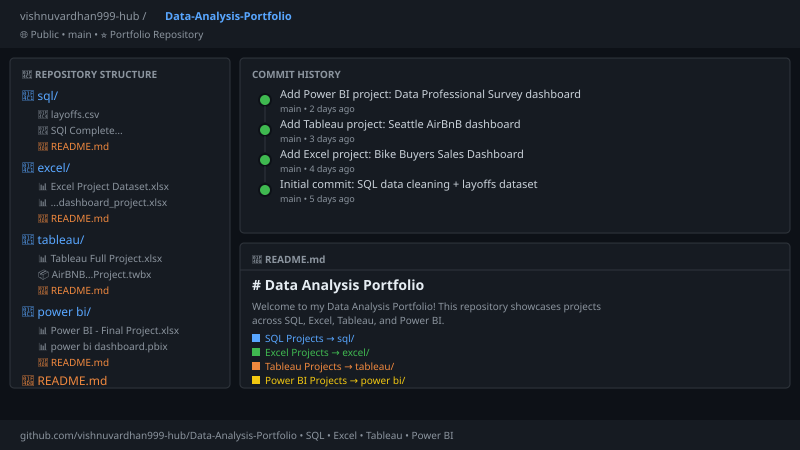

SQL · Data Cleaning & EDA
Cleaned and analyzed a real-world dataset of global tech company layoffs using MySQL.
Removed duplicates with ROW_NUMBER(), standardized messy fields, filled NULLs via self-joins,
then ran exploratory analysis using CTEs, window functions, and DENSE_RANK()
to surface the top companies and monthly rolling totals.


Analyzed 1,000 customer records to find who buys bikes and why. Cleaned raw abbreviated data, engineered an Age Bracket column with nested IF formulas, then built an interactive dashboard with Pivot Tables, charts, and slicers.
Tableau · Interactive Dashboard

Explored 3,818 Seattle AirBnB listings across 3 data sources. Built an interactive dashboard with a zipcode price map, bedroom pricing chart, weekly revenue trends, and neighbourhood breakdowns using LOD expressions.
Power BI · Survey Dashboard

Analyzed a real-world survey of 630 data professionals. Used Power Query to convert salary ranges to numeric midpoints. Revealed salary happiness averages just 4.27/10 and 59% switched careers into data.

View the complete Data Analysis Portfolio on GitHub — all datasets, SQL scripts, Excel workbooks, Tableau packaged workbook, and Power BI dashboard file, each with detailed READMEs explaining the full analysis.